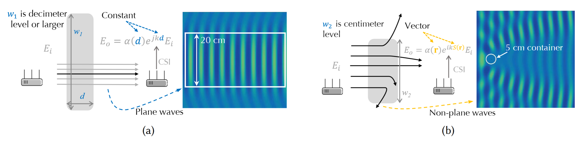
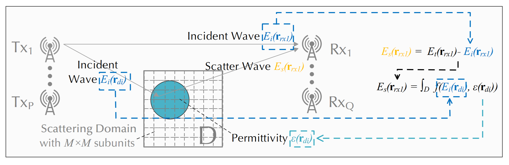

![]()
场感知模型
为什么射线追踪模型不适用于近波长目标
在空间中传播的电磁波（EM 波）由麦克斯韦方程组描述，其解取决于介质[1]。传统的材料感知方法[2–7]往往将麦克斯韦方程组近似为几何模型（如射线），然后求解通过待定系数建立模型以获得材质信息。 然而当目标尺寸不能远大于波长时，很难寻求精确的几何近似。 如果不准确描述介质的形状、材质和位置对电场的影响，就很难实现介质成像和材料识别。 幸运的是，我们注意到空间中传输的电磁场可以用麦克斯韦方程组来完整描述。 因此，我们尝试从麦克斯韦方程组出发，探索新的解。
电磁波的传播特性因材料而异。 在空间中传播的电磁波满足麦克斯韦方程组，即
\[ \left\{ \begin{aligned} &\nabla \cdot \boldsymbol{E} = \frac{1}{\epsilon_0} \rho \quad &\nabla& \cdot \boldsymbol{B} = 0\\ &\nabla \times \boldsymbol{E} = -\frac{\partial \boldsymbol{B}}{\partial t} \quad &\nabla& \times \boldsymbol{B} = \mu_0 \boldsymbol{J}+\mu_0\epsilon_0 \frac{\partial \boldsymbol{E}}{\partial t} \end{aligned}\right. \tag{1}\]
其中\(\boldsymbol{E}\)和\(\boldsymbol{B}\)分别是电场和磁场。 \(\epsilon_0\) 和 \(\mu_0\) 分别是自由空间的介电常数和磁导率。 \(\rho\) 是电荷密度，\(\boldsymbol{J}\) 是电流密度，两者都与分子和/或原子的性质有关。 因此，方程 Equation 1 的解随材料的不同而变化。

传统的无线感知方法 [2–7] 通常使用几何模型来近似 Equation 1。 最常见的模型是射线追踪模型，它将波等同于射线，并利用几何关系来确定波的反射和折射路径。 特别地，如图 Figure 1 所示，对于宽度为\(d\)的介质，出射波\(E_o\)和入射波\(E_i\)之间的关系可以表示为： \[ E_o = \alpha(d) e^{-j k d}E_i, \tag{2}\] 其中\(\alpha\)是衰减系数，\(k\)是介质中的波数。当传输距离\(d\)固定时，\((\alpha,k)\)对可以充分描述物质对波的影响。对于尺寸为\(10\)乘以波长的圆柱体，其周围的电场如图 Figure 1 右侧所示。在宽度为 20 cm 的域中，波可以被认为是平面波。因此，对于接收到的信号，我们可以用射线来描述波的传输。
然而，当利用Wi-Fi信号感知厘米级目标时，很难用几何模型来近似它们。如图 Figure 1 所示，当目标较小时，信号会向各个方向散射。对于尺寸与波长相似的圆柱体，其周围的电场如图@fig-single1 右侧所示。散射波是非常明显的非平面波。导致此时光线追踪模型的近似结果存在较大误差。对于波长大于 5 cm 的Wi-Fi信号，与容器尺寸接近，光线追踪模型不适合。
由于目标的类型、形状和位置都会影响接收到的信号，为了对厘米级目标进行成像和识别，我们希望尽可能准确地描述目标的散射信号。这将为我们利用CSI数据完成感知任务提供基础。因此，我们尝试基于麦克斯韦方程组建立更精确的传感模型，以扩展Wi-Fi材料传感的边界。
电场散射模型的建立与求解

介电特性随材料而变化（不同材料具有不同的复介电常数），这使得它们以独特的方式散射入射波 [1, 7, 8]。因此，接收到的信号将受到目标材料、形状和位置的影响。为了完成图像，我们尝试从接收到的信号中解析目标的位置、材料和形状信息。
与射线追踪模型不同，我们直接从麦克斯韦方程构建信号散射模型，然后求解传感域中的介电分布。
电场散射传感模型
和之前很多优秀的作品[3, 6, 9]类似，具体来说，如 Figure 2 所示，电场垂直于波的传播方向，传感域\(D\)所在的平面平行于波的传播方向。类似的场景很常见。例如，我们可以用这个模型来描述当我们把接收和发射天线垂直放在桌子上，来感应桌子上的目标时。
建立模型的关键思想来自于这样一个事实：我们接收到的散射场可以看作是传感域中等效电流的辐射场。等效电流取决于复介电常数的分布。我们首先引入模型的积分形式，然后将其离散化以方便计算。
根据电场叠加原理 [1, 8, 10]，因此，位置 \(\mathbf{r}\) 处的总电场 \(E_t(\mathbf{r})\) 由以下公式给出：\[E_t(\mathbf{r}) = E_i(\mathbf{r}) + E_s(\mathbf{r})， \tag{3}\] 其中 \(E_i(\mathbf{r})\) 和 \(E_s(\mathbf{r})\) 分别表示入射场和散射场。
根据方程 Equation 1 ，对于二维空间中的 TM 波，方程如下： \[\left\{ \begin{aligned} E_t(\mathbf{r}) &= E_i(\mathbf{r}) + k_0^2 \int_D G(\mathbf{r},\mathbf{r'}) I(\mathbf{r'}) d\mathbf{r'} \quad \text{for\ } \mathbf{r} \in D \\ E_s(\mathbf{r}) &= k_0^2 \int_D G(\mathbf{r},\mathbf{r'}) I(\mathbf{r'}) d\mathbf{r'} \quad \text{otherwise}, \end{aligned}\right. \tag{4}\] 其中 \(k_0\) 是空气的波数。\(G(\mathbf{r},\mathbf{r'}) = -\frac{j}{4} H_0^2 (k_0 |\mathbf{r}-\mathbf{r'}|)\) 是二维自由空间格林函数，其中 \(H_0^2(.)\) 是第二类 0 阶 Hankel 函数，\(j^2=-1\)。等效电流密度 \(I(\mathbf{r})\) 为\(I(\mathbf{r}) = [\epsilon(\mathbf{r})-1]E_t(\mathbf{r})\)。由于等效电流满足复介电常数分布，结合 Equation 3 和 Equation 4 ，我们得到了接收信号和复介电常数之间的精确关系。
在域 \(D\) 中，总场 \(\mathbf{E}_t\) 由下式给出： \[\mathbf{E}_t = \mathbf{E}_i + \mathbf{G}_D \mathbf{I} \tag{5}\] 其中 \(\mathbf{E}_t\)、\(\mathbf{E}_i\) 和 \(\mathbf{I}\) 是 \(M^2\) 维向量，其第 \(i\) 个元素分别为 \(\mathbf{E}_t(i) = E_t(\mathbf{r}_{di})\)、\(\mathbf{E}_i(i) = E_i(\mathbf{r}_{di})\) 和 \(\mathbf{I}(i) = I(\mathbf{r}_{di})\)。等效电流密度由下式给出 \[\mathbf{I} = \mathbf{\Lambda} \mathbf{E}_t, \tag{6}\] 其中 \(\mathbf{\Lambda}\) 是对角矩阵， \(\mathbf{\Lambda}(i,i) = \epsilon(\mathbf{r}_{di})-1\)。系数矩阵 \(\mathbf{G}_D\) 的维度为 \(M^2\times M^2\) \(\mathbf{G}_D(m,n) = k_0^2 \iint_{D_{n}} G(\mathbf{r}_{dm},\mathbf{r})d\mathbf{r}\), 其中 \(D_{n}\) 是第 \(n\) 个子单元。同样，在 \(Q\) 接收处天线，散射场为 \[\mathbf{E}_s = \mathbf{G}_S \mathbf{I} \tag{7}\] 其中 \(\mathbf{E}_s\) 是 \(Q\) 维度向量，其中第 \(i\) 个元素为 \(\mathbf{E}_s(i) = E_s(\mathbf{r}_{rxi})\)。这格林系数矩阵 \(\mathbf{G}_S\) 的维度为 \(Q \times M^2\) 和 \(\mathbf{G}_S(q,n) = k_0^2 \iint_{D{n}} G(\mathbf{r}_{rxq},\mathbf{r})d \mathbf{r}\) , 其中 \(D_{n}\) 是域 \(D\) 的第 \(n\) 个子单元。
Equation 5 to Equation 7 准确描述TM波在液体中的散射。由于不同的介质（包括空气和各种液体）具有不同的复介电常数，如果我们能够通过求解模型获得每个离散子单元中的复介电常数，那么液体的识别和成像就成为可能。
利用反向传播方案获取介电常数分布
我们首先考虑一个简单的情况：感知域 \(D\) 的散射场 \(\mathbf{E}_s\) 和入射场 \(\mathbf{E}_i\) 已知。在本小节中，我们介绍如何利用此假设估计复介电常数的分布。然后我们将其推广到特定的 Wi-Fi 感知任务。
困难来自两个方面。一方面，格林算子（\(\mathbf{G}_S\)和\(\mathbf{G}_D\)）具有滤波性质，这使得原始问题病态性 [10]。另一方面，波在介质中的多重散射效应使得问题具有强非线性。
因此，可以避免矩阵求逆、奇异值分解等计算，适用于任意入射场、近场和远场的求解 [10]。如公式 Equation 7 所示，散射场 \(\mathbf{E}_s\) 可以看作是等效电流 \(\mathbf{I}\) 的函数。我们首先利用最小二乘法估计具有散射场的等效电流。然后类似地估计复介电常数的分布。步骤如下。
(1) 假设散射域中的等效电流 \(\mathbf{I}\) 与散射场成线性关系， \[\tilde{\mathbf{I}} = \xi \bar{G}_S^{\rm H} \mathbf{E}_s \tag{8}\] 其中 \(\bar{G}_S^{\rm H}\) 是 \(\bar{G}_S\) 的共轭转置。系数 \(\xi\) 可以通过最小二乘法获得，其公式为 \[\xi = \mathop{\arg\min}\limits_{\xi}\Vert\mathbf{E}_s - \bar{G}_S \tilde{\mathbf{I}} \Vert = \frac{(\mathbf{E}_s)^{\rm T} (\bar{G}_S (\bar{G}_S^{\rm H} \mathbf{E}_s))^*}{\Vert\bar{G}_S (\bar{G}_S^{\rm H} \mathbf{E}_s)\Vert^2}, \tag{9}\] 其中 \(A^{\rm T}\) 和 \(A^*\) 分别是矩阵 \(A\) 的转置和共轭。
(2) 将方程 Equation 8 和方程 Equation 9 代入方程 Equation 5 ，总场估计为 \[\tilde{\mathbf{E}}_t = \mathbf{E}_i + \bar{G}_D \tilde{\mathbf{I}} = \mathbf{E}_i + \xi \bar{G}_D \bar{G}_S^{\rm H} \mathbf{E}_s \tag{10}\] 利用最小二乘法和 Equation 6 , 可以得到第 \(i\) 个子单元的复介电常数 \(\epsilon(\mathbf{r}_{di})\) 的解析解，其中 \[\epsilon(\mathbf{r}_{di})-1 = \bar{\Lambda}(i) =\frac{\sum_{p=1}^{P}\tilde{\mathbf{I}}^{p}(i)\left[\tilde{\mathbf{E}}_t^{p}(i)\right]^*}{\sum_{p=1}^{P}\Vert\tilde{\mathbf{E}}_t^{p}(i)\Vert^2} \label{eq:epsilon_est}\]
一旦我们获得了每个格点的复介电系数，我们就可以完成成像。